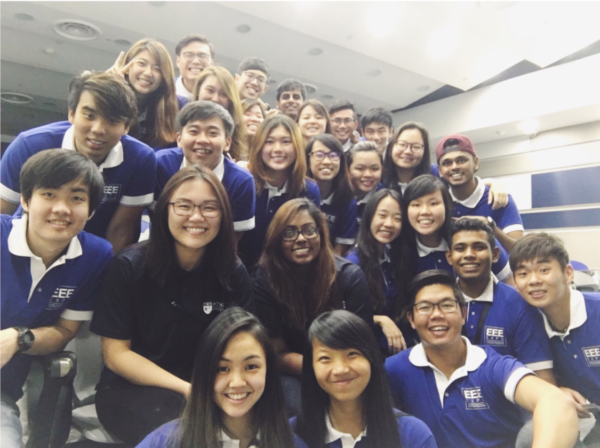

- Nanyang Technological University
- Garage@EEE (Makerspace)
- Chairperson - Steering Committee (August 2018 - Present)
- Works closely with Associate Chair (Students) for strategic initiatives
- Lead a team of 5 other steering committee members with the support of 105 committee members to drive initiatives and translate goals into action plans for Garage@EEE
- Responsible in identifying collaboration opportunities for Garage@EEE and assign adequate manpower and resources to support initiatives
- Special Projects Officer - Executive Committee (December 2016 - July 2018)
- Supported the steering committee in strategic initiatives and goal settings for Garage@EEE to ensure that goals are translated into action plans for the committee
- Worked closely with 6 other Special Projects Executive Committee members to lead a team of 14 committee members to initiate and spearhead ad-hoc projects
- NTU EEE/IEM ESCENDO 2018 (Undergraduate Holiday Programme)
- Assistant Chairperson - Main Committee (August 2017 - January 2018)
- Collaborated and coordinated with another EEE/IEM student body in strategic planning and direction setting for an inaugural 4D3N arcade-themed technical camp
- Mentored a team of 4 student leaders in developing, planning and executing the incorporation of technical skills via a series of workshops as well as a 2D1N Makeathon
- NTU EEE/IEM ENITIO Freshmen Transition & Orientation Programme (TOP) 2017
- Chairperson - Main Committee (January 2017 - August 2017)
- Led an organizing committee of 8 student leaders to collaborate and coordinate with staff committee in strategic planning and direction setting for the programme at both school and faculty level to align objectives & vision of an inaugural technology-enhanced orientation programme
- Spearheaded and guided a team of 80 committee members in developing, planning and executing the incorporation of various intriguing indoor and outdoor Escape Activities & bonding elements to transit freshmen into the School of EEE
- NTU EEE Expo Arduino Weather Station Workshop 2017 
- Chairperson - Main Committee (January 2017 - March 2017)
- Led a team of 3 student leaders in developing and planning a one-day Arduino Weather Station Workshop as a segment of the inaugural EEE Expo to engage prospective students to various areas of electrical and electronic engineering
- Managed and guided a team of 20 student leaders in facilitating 150 students from various Junior Colleges to create a workable simple weather station from scratch
- NTU EEE Innovation Challenge 2016
- Assistant Chairperson - Main Committee (August 2016 - December 2016)
- Involved in the planning and execution of a 3D2N Innovation Challenge to engage prospective students to various areas of electrical and electronic engineering
- Guided and managed a team of 18 student leaders in guiding 80 participants through a series of exciting activities on top of an overnight hackathon in school
- Yishun Junior College
- Students' Council
- Vice President - Executive Committee (May 2013 - May 2014)
- Led and managed a team of 10 student leaders in planning and executing major school events such as Freshmen Orientation Programme, Graduation Night & Student Leaders Investiture
- Mentored a team of 25 incoming student leaders by exposing them to various opportunities to enhance their leadership skills and facilitated them through the smooth transition into their leadership appointments
- Represented the college in external events such as Councils' Converge, Inter-collegiate Seminar and Youth Dialogue with Minister of Law
- Ahmad Ibrahim Secondary School
- Students' Council
- President - Executive Committee (April 2011 - July 2012)
- Worked closely with the Student Leadership Development Unit for strategic initiatives
- Led a team of 13 executive committee members to plan and execute many events for the staffs and students on a school level such as Freshmen Orientation Programme, Graduation Night & Teachers’ Day
- Collaborated with Chairpersons of other CCA bodies in planning and executing school events such as Racial Harmony Day and Open House
- Mentored the presidency successor in preparation in managing and leading the new executive committee members to carry out the respective roles and responsibilities
- Yishun Primary School
- Prefectorial Board
- Deputy Head Prefect (January 2007 - December 2008)
- Worked closely and supported the Head Prefect in the supervision of daily tasks delegated to the Prefects
- Prefect Leader (January 2006 - January 2007)
- Middle Management to serve as a bridge between the executive committee members and the prefects
- Ensured that tasks are carried out faithfully and supported the executive committee members in the management of the team